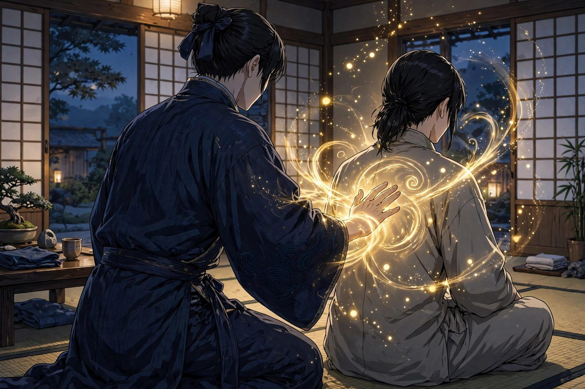

気功施術について
北辰会の気功施術は、伝統的な気功の考え方に基づく身体ケアです。鍼灸師として経絡の知識を土台に、手を触れる施術と、触れずに行う施術を組み合わせて、気の流れを整えていきます。
気功は中国で長く伝えられてきた養生と施術の体系です。北辰会では、その中でも推拿と結びついた少林内功、意拳の養生気功、焦国瑞気功の流れを汲み、現代の施術の形にしています。
医療気功の定義・歴史・内気功と外気功の違い・科学研究の現状については、「医療気功とは」のページで詳しく解説しています。

北辰帰元法
北辰会の施術の核となるのが、オリジナルの技「北辰帰元法（ほくしんきげんほう）」です。
臍を身体の中心ととらえ、命門（腰の中心にある要の場所）から全身の気の巡りに働きかける、鍼を使わない手技です。北辰（北極星）が空の中心で動かないように、身体の中心から全体を整えていく考え方を取っています。
技の詳細は、施術と講習会の中でお伝えしています。
施術の進め方
1. 問診
その日の状態や、これまでの経過をうかがいます。通院中の方は、治療の状況もお聞かせください。
2. 施術
経絡の流れを見ながら、北辰帰元法を中心に施術を組み立てます。服の上から行いますので、動きやすい服装でお越しください。
3. 確認
施術後に状態を確認し、日常でできる養生のポイントがあればお伝えします。
料金
| 気功施術 60分 | ¥15,000 |
|---|---|
| 気功施術 90分 | ¥20,000 |
| 気功施術 120分 | ¥30,000 |
大阪・出張とも同額です。出張の開催条件は「料金・出張の仕組み」をご覧ください。
注意事項
- 施術は医療行為の代替ではありません。通院中の方は、主治医の治療を優先してください。北辰会の施術は、日々の治療と併せて受けていただく身体ケアとして位置づけています（「併用ケアの考え方」もご覧ください）。
- 特定の症状が治る・改善するといったお約束はしません。感じ方には個人差があります。
- 妊娠中の方、体調に不安のある方は、ご予約の際にご相談ください。
- 施術内容は、その日の状態により変更する場合があります。